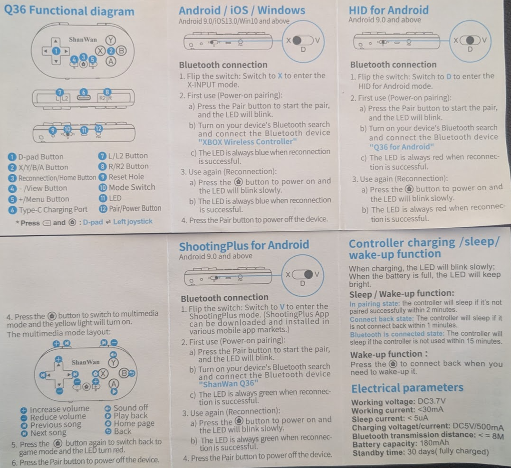

Shanwan Q36 Manual
Digitized by ChatGPT in 2025 🙂
Q36 Functional Diagram
- D-pad Button
- X/Y/B/A Button
- Reconnection/Home Button
- View Button
- +/- Menu Button
- L/L2 Button
- R/R2 Button
- Reset Hole
- Mode Switch
- Type-C Charging Port
- Pair/Power Button
Android / iOS / Windows
Bluetooth connection
- Flip the switch to X to enter the X-INPUT mode.
- First use (Power-on pairing):
- Press the Pair button to start the pair, and the LED will blink.
- Turn on your device's Bluetooth search and connect the Bluetooth device "XBOX Wireless Controller"
- The LED is always blue when reconnection is successful.
- Use again (Reconnection):
- Press the (home) button to power on and the LED will blink slowly.
- The LED is always blue when reconnection is successful.
- Press the Pair button to power off the device.
HID for Android
Bluetooth connection
- Flip the switch to D to enter the HID for Android mode.
- First use (Power-on pairing):
- Press the Pair button to start the pair, and the LED will blink.
- Turn on your device's Bluetooth search and connect the Bluetooth device "Q36 for Android"
- The LED is always red when reconnection is successful.
- Use again (Reconnection):
- Press the (home) button to power on and the LED will blink slowly.
- The LED is always red when reconnection is successful.
ShootingPlus for Android
Bluetooth connection
- Flip the switch to V to enter the ShootingPlus mode.
- First use (Power-on pairing):
- Press the Pair button to start the pair, and the LED will blink.
- Turn on your device's Bluetooth search and connect the Bluetooth device "ShanWan Q36"
- The LED is always green when reconnection is successful.
- Use again (Reconnection):
- Press the (home) button to power on and the LED will blink slowly.
- The LED is always green when reconnection is successful.
Controller Charging / Sleep / Wake-up Function
Charging
- When charging, the LED will blink slowly.
- When the battery is full, the LED will keep bright.
Sleep / Wake-up function
- In pairing state, the controller will sleep if it's not paired successfully within 2 minutes.
- Connect back state: The controller will sleep if it is not connected back within 1 minute.
- Bluetooth is connected state: The controller will sleep if the controller is not used within 15 minutes.
Wake-up function
Press the (home) button to connect back when you need to wake-up.
Electrical Parameters
- Working voltage: DC3.7V
- Working current: <30mA
- Sleep current: <5uA
- Charging voltage/current: DC5V/500mA
- Bluetooth transmission distance: ≤ 8m
- Battery capacity: 180mAh
- Standby time: 30 days (fully charged)
Image
